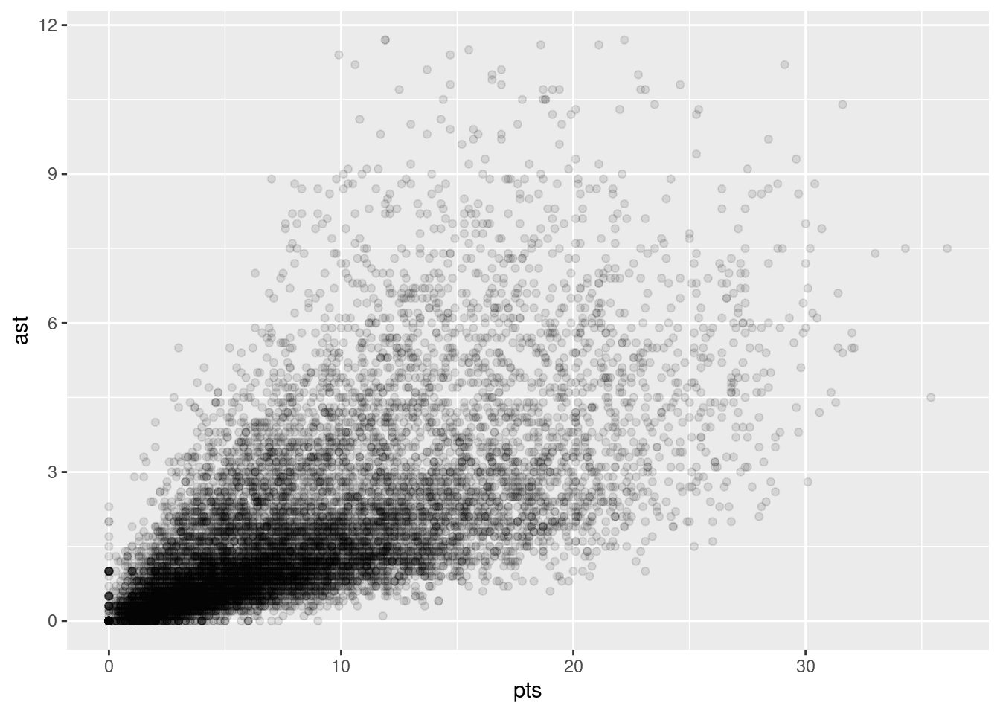

(56 + 31 + 56 + 8 + 32) / 5[1] 36.6Any time that you get a new data set to look at, one of the first tasks that you have to do is find ways of summarising the data in a compact, easily understood fashion. This is what descriptive statistics (as opposed to inferential statistics) is all about. In fact, to many people the term “statistics” is synonymous with descriptive statistics. We already got a bit of an idea about why we need descriptive statistics in Section 8.5. This chapter will focus primarily on the functions available to calculate a variety of descriptive statistics and, for the most part, assume that you know why you might prefer one over another.
Drawing pictures of the data, as we did in Section 8.5 is an excellent way to convey the “gist” of what the data is trying to tell you, it’s often extremely useful to try to condense the data into a few simple “summary” statistics. In most situations, the first thing that you’ll want to calculate is a measure of central tendency. That is, you’d like to know something about the “average” or “middle” of your data lies. The most commonly used measures are the mean, median and mode.
The mean of a set of observations is just a normal, old-fashioned average: add all of the values up, and then divide by the total number of values. If we have five observations (56, 31, 56, 8 and 32), the mean of these observations is: \[ \frac{56 + 31 + 56 + 8 + 32}{5} = \frac{183}{5} = 36.60 \] Of course, this definition of the mean isn’t news to anyone: averages (i.e., means) are used so often in everyday life that this is pretty familiar stuff. However, since the concept of a mean is something that everyone already understands, I’ll use this as an excuse to start introducing some of the mathematical notation that statisticians use to describe this calculation, and talk about how the calculations would be done in R.
How do we get the magic computing box to do all this work for us? If you really wanted to, you could do this calculation directly in R.
(56 + 31 + 56 + 8 + 32) / 5[1] 36.6However, that’s not the only way to do the calculations, and when the number of observations starts to become large, it’s easily the most tedious. We could use the sum() function to get the numerator for us
sum(c(56, 31, 56, 8, 32)) / 5[1] 36.6This is ok, but we can do it even more easily using the mean() function.
mean(c(56, 31, 56, 8, 32))[1] 36.6As you can see, this gives exactly the same answers as the previous calculations.
The second measure of central tendency that people use a lot is the median, and it’s even easier to describe than the mean. The median of a set of observations is just the middle value. As before let’s imagine we were interested only in the five values from before. To figure out the median, we sort these numbers into ascending order: \[
8, 31, \mathbf{32}, 56, 56
\] From inspection, it’s obvious that the median value of these 5 observations is 32, since that’s the middle one in the sorted list (I’ve put it in bold to make it even more obvious). Easy stuff. But what should we do if we were interested in the first 6 games rather than the first 5? Since the sixth game in the season had a winning margin of 14 points, our sorted list is now \[
8, 14, \mathbf{31}, \mathbf{32}, 56, 56
\] and there are two middle numbers, 31 and 32. The median is defined as the average of those two numbers, which is of course 31.5. As before, it’s very tedious to do this by hand when you’ve got lots of numbers. To illustrate this, here’s what happens when you use R to sort the values. First, I’ll use the sort() function to display the values in increasing numerical order:
sort(c(56, 31, 56, 8, 32, 14))[1] 8 14 31 32 56 56The middle values are 30 and 31, so the median winning margin for 2010 was 30.5 points. In real life, of course, no-one actually calculates the median by sorting the data and then looking for the middle value. In real life, we use the median command:
median(c(56, 31, 56, 8, 32, 14))[1] 31.5which outputs the value we expect.
Knowing how to calculate means and medians is only a part of the story. You also need to understand what each one is saying about the data, and what that implies for when you should use each one. The mean is kind of like the “center of gravity” of the data set, whereas the median is the “middle value” in the data. What this implies that the appropriate measure of central tendency depends on what type of data you’ve got and what you’re trying to achieve. As a rough guide:
The mode of a sample is very simple: it is the value that occurs most frequently within a set of measurements. To illustrate the mode using the nba data, let’s examine the teams represented in the data set Let’s take a look at the first few values of this variable.
head(nba$team_abbreviation)[1] "CHI" "LAC" "TOR" "DAL" "MIA" "HOU"These are strings (or character vectors) that represent the team each player is plays for. We could read through all 400, and count the number of occasions on which each team name appears in our list of finalists, thereby producing a frequency table. However, that would be mindless and boring: exactly the sort of task that computers are great at. So let’s use the table() function (discussed in more detail in Section @ref(freqtables)) to do this task for us:
table(nba$team_abbreviation)
ATL BKN BOS CHA CHH CHI CLE DAL DEN DET GSW HOU IND LAC LAL MEM MIA MIL MIN NJN
421 180 407 288 89 406 433 422 412 400 409 418 410 424 411 352 426 409 399 257
NOH NOK NOP NYK OKC ORL PHI PHX POR SAC SAS SEA TOR UTA VAN WAS
143 32 159 410 239 411 420 399 407 398 413 182 428 397 72 422 If you spend enough time staring at this frequency table, you may be able to figure out that there are more rows associated with “CLE” (the Cleveland Cavaliers) than any other team. Thus, the mode of the team_abbreviation data is "CLE".
Somewhat surprisingly, neither the core functionality of R nor the tidyverse has a function for calculating the mode. However, you can find packages with such functionality (e.g., modeest). You can also find mode-calculating function that others have put together (e.g., on StackOverflow).
The statistics that we’ve discussed so far all relate to central tendency. That is, they all talk about which values are “in the middle” or “popular” in the data. However, central tendency is not the only type of summary statistic that we want to calculate. The second thing that we really want is a measure of the variability of the data. That is, how “spread out” are the data? How “far” away from the mean or median do the observed values tend to be? For now, let’s assume that the data are interval or ratio scale, so we’ll use the age variable in our nba data set. We’ll use this data to discuss several different measures of spread, each with different strengths and weaknesses.
The range of a variable is very simple: it’s the biggest value minus the smallest value. For the data, the maximum value of age is 44, and the minimum value is 18. We can calculate these values in R using the max() and min() functions:
max(nba$age)[1] 44min(nba$age)[1] 18The other possibility is to use the range() function; which outputs both the minimum value and the maximum value in a vector, like this:
range(nba$age)[1] 18 44Although the range is the simplest way to quantify the notion of “variability”, it’s one of the worst. Recall from our discussion of the mean that we want our summary measure to be robust. If the data set has one or two extremely bad values in it, we’d like our statistics not to be unduly influenced by these cases. If we look once again at our toy example of a data set containing very extreme outliers…
\[ -100,2,3,4,5,6,7,8,9,10 \] … it is clear that the range is not robust, since this has a range of 110, but if the outlier were removed we would have a range of only 8. The problem with the range is that it only considers two numbers: the mininum and the maximum. It completely ignores every other value.
The interquartile range (IQR) is like the range, but instead of calculating the difference between the biggest and smallest value, it calculates the difference between the 25th quantile and the 75th quantile. Probably you already know what a quantile is (they’re more commonly called percentiles), but if not: the 10th percentile of a data set is the smallest number \(x\) such that 10% of the data is less than \(x\). In fact, we’ve already come across the idea: the median of a data set is its 50th quantile / percentile! R actually provides you with a way of calculating quantiles, using the (surprise, surprise) quantile() function. Let’s use it to calculate the median AFL winning margin:
quantile(x=nba$age, probs=.5)50%
26 And not surprisingly, this agrees with the answer that we saw earlier with the median() function. Now, we can actually input lots of quantiles at once, by specifying a vector for the probs argument. So lets do that, and get the 25th and 75th percentile:
quantile(x=nba$age, probs=c(.25,.75))25% 75%
24 30 And, by noting that \(30 - 24 = 6\), we can see that the interquartile range for the age variable is 6. Of course, that seems like too much work to do all that typing, so R has a built in function called IQR() that we can use:
IQR(x=nba$age)[1] 6Though it’s obvious how to interpret the range, it’s a little less obvious how to interpret the IQR. The simplest way to think about it is like this: the interquartile range is the range spanned by the “middle half” of the data. That is, one quarter of the data falls below the 25th percentile, one quarter of the data is above the 75th percentile, leaving the “middle half” of the data lying in between the two. And the IQR is the range covered by that middle half.
The two measures we’ve looked at so far, the range and the interquartile range, both rely on the idea that we can measure the spread of the data by looking at the quantiles of the data. However, this isn’t the only way to think about the problem. A different approach is to select a meaningful reference point (usually the mean or the median) and then report the “typical” deviations from that reference point. What do we mean by “typical” deviation? Usually, the mean or median value of these deviations! In practice, this leads to two different measures, the “mean absolute deviation (from the mean)” and the “median absolute deviation (from the median)”. From what I’ve read, the measure based on the median seems to be used in statistics, and does seem to be the better of the two, but to be honest I don’t think I’ve seen it used much in psychology. The measure based on the mean does occasionally show up in psychology though. In this section I’ll talk about the first one, and I’ll come back to talk about the second one later.
Since the previous paragraph might sound a little abstract, let’s go through the mean absolute deviation from the mean a little more slowly. One useful thing about this measure is that the name actually tells you exactly how to calculate it. Let’s think about values of56, 31, 56, 8 and 32 again. Since our calculations rely on an examination of the deviation from some reference point (in this case the mean), the first thing we need to calculate is the mean. For these five observations, our mean is 36.6. The next step is to convert each of our observations into a deviation score. We do this by calculating the difference between the observation and the mean. For the first observation in our sample, this is equal to \(56 - 36.6 = 19.4\). Okay, that’s simple enough. The next step in the process is to convert these deviations to absolute deviations. We do this by converting any negative values to positive ones. Mathematically, we would denote the absolute value of \(-3\) as \(|-3|\), and so we say that \(|-3| = 3\). We use the absolute value function (abs() in R) here because we don’t really care whether the value is higher than the mean or lower than the mean, we’re just interested in how close it is to the mean. To help make this process as obvious as possible, the table below shows these calculations for all five observations:
Now that we have calculated the absolute deviation score for every observation in the data set, all that we have to do to calculate the mean of these scores. Let’s do that:
\[ \frac{19.4 + 5.6 + 19.4 + 28.6 + 4.6}{5} = 15.52 \]
And we’re done. The mean absolute deviation for these five scores is 15.52.
However, while our calculations for this little example are at an end, we do have a couple of things left to talk about. Firstly, we should really try to write down a proper mathematical formula. But in order do to this I need some mathematical notation to refer to the mean absolute deviation. Irritatingly, “mean absolute deviation” and “median absolute deviation” have the same acronym (MAD), which leads to a certain amount of ambiguity, and since R tends to use MAD to refer to the median absolute deviation, I’d better come up with something different for the mean absolute deviation. Sigh. What I’ll do is use AAD instead, short for average absolute deviation. Now that we have some unambiguous notation, here’s the formula that describes what we just calculated: \[ \mbox{}(X) = \frac{1}{N} \sum_{i = 1}^N |X_i - \bar{X}| \]
The last thing we need to talk about is how to calculate AAD in R. One possibility would be to do everything using low level commands, laboriously following the same steps that I used when describing the calculations above. However, that’s pretty tedious. You’d end up with a series of commands that might look like this:
X <- c(56, 31,56,8,32) # enter the data
X.bar <- mean( X ) # step 1. the mean of the data
AD <- abs( X - X.bar ) # step 2. the absolute deviations from the mean
AAD <- mean( AD ) # step 3. the mean absolute deviations
print( AAD ) # print the results[1] 15.52Each of those commands is pretty simple, but there’s just too many of them. And because I find that to be too much typing. If you find yourself needing to invoke these commands repeatedly, you might consider building function to do so (Section 3.4).
Although the mean absolute deviation measure has its uses, it’s not the best measure of variability to use. From a purely mathematical perspective, there are some solid reasons to prefer squared deviations rather than absolute deviations. If we do that, we obtain a measure is called the variance, which has a lot of really nice statistical properties that we’ll ignore for now and one massive psychological flaw that we’ll make a big deal out of in a moment. The variance of a data set is sometimes written as \(\mbox{Var}(X)\), but it’s more commonly denoted \(s^2\) (the reason for this will become clearer shortly). The formula that we use to calculate the variance of a set of observations is as follows:
\[ \mbox{Var}(X) = \frac{1}{N} \sum_{i=1}^N \left( X_i - \bar{X} \right)^2 \] \[\mbox{Var}(X) = \frac{\sum_{i=1}^N \left( X_i - \bar{X} \right)^2}{N}\]
As you can see, it’s basically the same formula that we used to calculate the mean absolute deviation, except that instead of using “absolute deviations” we use “squared deviations”. It is for this reason that the variance is sometimes referred to as the “mean square deviation”.
Now that we’ve got the basic idea, let’s have a look at a concrete example. Once again, let’s use the five values we have been working with so far. If we follow the same approach that we took last time, we end up with the following table:
| Notation [English] | \(i\) [which game] | \(X_i\) [value] | \(X_i - \bar{X}\) [deviation from mean] | \((X_i - \bar{X})^2\) [absolute deviation] |
|---|---|---|---|---|
| 1 | 56 | 19.4 | 376.36 | |
| 2 | 31 | -5.6 | 31.36 | |
| 3 | 56 | 19.4 | 376.36 | |
| 4 | 8 | -28.6 | 817.96 | |
| 5 | 32 | -4.6 | 21.16 |
That last column contains all of our squared deviations, so all we have to do is average them. If we do that by typing all the numbers into R by hand…
(376.36 + 31.36 + 376.36 + 817.96 + 21.16) / 5[1] 324.64… we end up with a variance of 324.64. Exciting, isn’t it? For the moment, let’s ignore the burning question that you’re all probably thinking (i.e., what the heck does a variance of 324.64 actually mean?) and instead talk a bit more about how to do the calculations in R, because this will reveal something very weird.
As always, we want to avoid having to type in a whole lot of numbers ourselves. And as it happens, we have the vector X lying around, which we created in the previous section. With this in mind, we can calculate the variance of X by using the following command,
mean( (X - mean(X) )^2)[1] 324.64and as usual we get the same answer as the one that we got when we did everything by hand. However, I still think that this is too much typing. Fortunately, R has a built in function called var() which does calculate variances. So we could also do this…
var(X)[1] 405.8and you get the same… no, wait… you get a completely different answer. That’s just weird. Is R broken? Is this a typo?
It’s not a typo, and R is not making a mistake. To get a feel for what’s happening, let’s stop using the tiny data set containing only 5 data points, and switch to the full set ages that we’ve got stored in nba$age vector. First, let’s calculate the variance by using the formula that I described above:
mean( (nba$age - mean(nba$age) )^2)[1] 18.79822Now let’s use the var() function:
var(nba$age)[1] 18.79975Hm. These two numbers are very similar this time. That seems like too much of a coincidence to be a mistake. And of course it isn’t a mistake. In fact, it’s very simple to explain what R is doing here, but slightly trickier to explain why R is doing it. So let’s start with the “what”. What R is doing is evaluating a slightly different formula to the one I showed you above. Instead of averaging the squared deviations, which requires you to divide by the number of data points \(N\), R has chosen to divide by \(N-1\). In other words, the formula that R is using is this one
\[ \frac{1}{N-1} \sum_{i=1}^N \left( X_i - \bar{X} \right)^2 \] It’s easy enough to verify that this is what’s happening, as the following command illustrates:
sum( (nba$age-mean(nba$age))^2 ) / (length(nba$age) - 1)[1] 18.79975This is the same answer that R gave us originally when we calculated var(X) originally. So that’s the what. The real question is why R is dividing by \(N-1\) and not by \(N\). After all, the variance is supposed to be the mean squared deviation, right? So shouldn’t we be dividing by \(N\), the actual number of observations in the sample? Well, yes, we should. However,there’s a subtle distinction between “describing a sample” and “making guesses about the population from which the sample came”. Up to this point, it’s been a distinction without a difference. Regardless of whether you’re describing a sample or drawing inferences about the population, the mean is calculated exactly the same way. Not so for the variance, or the standard deviation, or for many other measures besides. What I outlined to you initially (i.e., take the actual average, and thus divide by \(N\)) assumes that you literally intend to calculate the variance of the sample. Most of the time, however, you’re not terribly interested in the sample in and of itself. Rather, the sample exists to tell you something about the world. If so, you’re actually starting to move away from calculating a “sample statistic”, and towards the idea of estimating a “population parameter”. However, I’m getting ahead of myself. For now, let’s just take it on faith that R knows what it’s doing, and we’ll revisit the question later on.
Okay, one last thing. This section so far has read a bit like a mystery novel. I’ve shown you how to calculate the variance, described the weird “\(N-1\)” thing that R does and hinted at the reason why it’s there, but I haven’t mentioned the single most important thing…how do you interpret the variance? Descriptive statistics are supposed to describe things, after all, and right now the variance is really just a gibberish number. Unfortunately, the reason why I haven’t given you the human-friendly interpretation of the variance is that there really isn’t one. This is the most serious problem with the variance. Although it has some elegant mathematical properties that suggest that it really is a fundamental quantity for expressing variation, it’s completely useless if you want to communicate with an actual human…variances are completely uninterpretable in terms of the original variable! All the numbers have been squared, and they don’t mean anything anymore. This is a huge issue. For instance, according to our calculations earlier, first value (i.e., 56) is “376.36 points-squared higher than the average”. This is exactly as stupid as it sounds; and so when we calculate a variance of 324.64, we’re in the same situation. You are probably familiar with lots of measurements (height, weight, dollars earned, etc.), but you rarely refer to “pounds squared” or “dollars squared”. It’s not a real unit of measurement, and since the variance is expressed in terms of this gibberish unit, it is totally meaningless to a human.
Okay, suppose that you like the idea of using the variance because of those nice mathematical properties that I haven’t talked about, but – since you’re a human and not a robot – you’d like to have a measure that is expressed in the same units as the data itself (i.e., points, not points-squared). What should you do? The solution to the problem is obvious: take the square root of the variance, known as the standard deviation, also called the “root mean squared deviation”, or RMSD. This solves out problem fairly neatly: while nobody has a clue what “a variance of XYZ dollars-squared” really means, it’s much easier to understand “a standard deviation of $12”, since it’s expressed in the units the measurements were originally made in. It is traditional to refer to the standard deviation of a sample of data as \(s\), though “SD” and “std dev.” are also used at times. Because the standard deviation is equal to the square root of the variance, you probably won’t be surprised to see that the formula is:
\[ s = \sqrt{ \frac{1}{N} \sum_{i=1}^N \left( X_i - \bar{X} \right)^2 } \]
and the R function that we use to calculate it is sd(). However, as you might have guessed from our discussion of the variance, what R actually calculates is slightly different to the formula given above. Just like the we saw with the variance, what R calculates is a version that divides by \(N-1\) rather than \(N\). For reasons that will make sense when we return to this topic in Chapter@refch:estimation I’ll refer to this new quantity as \(\hat\sigma\) (read as: “sigma hat”), and the formula for this is
\[ \hat\sigma = \sqrt{ \frac{1}{N-1} \sum_{i=1}^N \left( X_i - \bar{X} \right)^2 } \]
With that in mind, calculating standard deviations in R is simple:
sd(X)[1] 20.14448Interpreting standard deviations is slightly more complex. Because the standard deviation is derived from the variance, and the variance is a quantity that has little to no meaning that makes sense to us humans, the standard deviation doesn’t have a simple interpretation. As a consequence, most of us just rely on a simple rule of thumb: in general, you should expect 68% of the data to fall within 1 standard deviation of the mean, 95% of the data to fall within 2 standard deviation of the mean, and 99.7% of the data to fall within 3 standard deviations of the mean. This rule tends to work pretty well most of the time, but it’s not exact: it’s actually calculated based on an assumption that the histogram is symmetric and “bell-shaped” (strictly speaking, it assumes measurements are normally-distributed). When data is not symmetric and/or not bell-shaped, the rule is approximately correct. As it turns out, 65.3% of the AFL margins data fall within one standard deviation of the mean. This is shown visually in Figure @ref(fig:aflsd).
Warning: `position_stack()` requires non-overlapping x intervals
nba$age. The red bars in the histogram show how much of the data fall within one standard deviation of the mean.The last measure of variability that I want to talk about is the median absolute deviation (MAD). The basic idea behind MAD is very simple, and is pretty much identical to the idea behind the mean absolute deviation (Section 11.2.3). The difference is that you use the median everywhere. If we were to frame this idea as a pair of R commands, they would look like this:
# mean absolute deviation from the mean:
mean( abs(nba$age - mean(nba$age)) )[1] 3.553141# *median* absolute deviation from the *median*:
median( abs(nba$age - median(nba$age)) )[1] 3This has a straightforward interpretation: every observation in the data set lies some distance away from the typical value (the median). So the MAD is an attempt to describe a typical deviation from a typical value in the data set. It wouldn’t be unreasonable to interpret the MAD value of 3 for our age variable by saying something like this:
The median age in our data is 26, indicating that a typical player was 26 years old. However, there was a fair amount of variation from player to player: the MAD value was 3, indicating that a typical player’s age would differ from this median value by about 3 years.
As you’d expect, R has a built in function for calculating MAD, and you will be shocked no doubt to hear that it’s called mad(). However, it’s a little bit more complicated than the functions that we’ve been using previously. If you want to use it to calculate MAD in the exact same way that I have described it above, the command that you need to use specifies two arguments: the data set itself x, and a constant that I’ll explain in a moment. For our purposes, the constant is 1, so our command becomes
mad( x = nba$age, constant = 1 )[1] 3Apart from the weirdness of having to type that constant = 1 part, this is pretty straightforward.
Okay, so what exactly is this constant = 1 argument? I won’t go into all the details here, but here’s the gist. Although the “raw” MAD value that I’ve described above is completely interpretable on its own terms, that’s not actually how it’s used in a lot of real world contexts. Instead, what happens a lot is that the researcher actually wants to calculate the standard deviation. However, in the same way that the mean is very sensitive to extreme values, the standard deviation is vulnerable to the exact same issue. So, in much the same way that people sometimes use the median as a “robust” way of calculating “something that is like the mean”, it’s not uncommon to use MAD as a method for calculating “something that is like the standard deviation”. Unfortunately, the raw MAD value doesn’t do this. Our raw MAD value is 19.5, and our standard deviation was 26.07. However, what some clever person has shown is that, under certain assumptions (normally-distributed), you can multiply the raw MAD value by 1.4826 and obtain a number that is directly comparable to the standard deviation. As a consequence, the default value of constant is 1.4826, and so when you use the mad() command without manually setting a value, here’s what you get:
mad(nba$age)[1] 4.4478I should point out, though, that if you want to use this “corrected” MAD value as a robust version of the standard deviation, you really are relying on the assumption that the data are (or at least, are “supposed to be” in some sense) symmetric and basically shaped like a bell curve. That’s really not true for our ages data, so in this case I wouldn’t try to use the MAD value this way.
We’ve discussed quite a few measures of spread (range, IQR, MAD, variance and standard deviation), and hinted at their strengths and weaknesses. Here’s a quick summary:
In short, the IQR and the standard deviation are easily the two most common measures used to report the variability of the data; but there are situations in which the others are used. I’ve described all of them in this book because there’s a fair chance you’ll run into most of these somewhere.
There are two more descriptive statistics that you will sometimes see reported in the psychological literature, known as skew and kurtosis. In practice, neither one is used anywhere near as frequently as the measures of central tendency and variability that we’ve been talking about. Skew is pretty important, so you do see it mentioned a fair bit; but I’ve actually never seen kurtosis reported in a scientific article to date.
Since it’s the more interesting of the two, let’s start by talking about the skewness. Skewness is basically a measure of asymmetry, and the easiest way to explain it is by drawing some pictures. As Figure 11.2 illustrates, if the data tend to have a lot of extreme large values (i.e., the right tail is “longer” than the left tail) and not so many extremely small values (blue line), then we say that the data are left skewed (or negatively skewed). On the other hand, if there are more extremely small values than extremely large ones (red line) we say that the data are right skewed (or positively skewed). That’s the qualitative idea behind skewness. The actual formula for the skewness of a data set is as follows
\[ \mbox{skewness}(X) = \frac{1}{N \hat{\sigma}^3} \sum_{i=1}^N (X_i - \bar{X})^3 \] where \(N\) is the number of observations, \(\bar{X}\) is the sample mean, and \(\hat{\sigma}\) is the standard deviation (the “divide by \(N-1\)” version, that is).
The final measure that is sometimes referred to, though very rarely in practice, is the kurtosis of a data set. Put simply, kurtosis is a measure of the “pointiness” of a data set, or, equivalently, how thick the tails of the distribution are. We won’t go into it deeply here, but will instead point you to the very nice Wikipedia entry for more details about both the concept of kurtosis and how to quantify it.
Up to this point in the chapter I’ve explained several different summary statistics that are commonly used when analysing data, along with specific functions that you can use in R to calculate each one. However, it’s kind of annoying to have to separately calculate means, medians, standard deviations, skews etc. Wouldn’t it be nice if R had some helpful functions that would do all these tedious calculations at once? Something like summary() or describe(), perhaps? Why yes, yes it would. So much so that both of these functions exist. The summary() function is in the base package, so it comes with every installation of R. The describe() function is part of the psych package, which we loaded earlier in the chapter.
The summary() function is an easy thing to use. The basic idea behind the summary() function is that it prints out some useful information about whatever object you specify as the object argument. Because of how R functions work, the behavior of the summary() function differs quite dramatically depending on the type of the object that you give it. Let’s start by giving it a numeric object:
summary( object = nba$age) Min. 1st Qu. Median Mean 3rd Qu. Max.
18.00 24.00 26.00 27.08 30.00 44.00 For numeric variables, we get a whole bunch of useful descriptive statistics. It gives us the minimum and maximum values (i.e., the range), the first and third quartiles (25th and 75th percentiles; i.e., the IQR), the mean and the median. In other words, it gives us a pretty good collection of descriptive statistics related to the central tendency and the spread of the data.
Okay, what about if we feed it a logical vector instead? Let’s say I want to know something about how many “superstars” are in our data set. We might operationalize the concept of a superstar as a player averaging more than 30 points per game for a season. Let’s create a logical variable superstar in which each element is TRUE if the corresponding player was is a superstar according to this definition.
superstar <- nba$pts > 30
head(superstar, 10) [1] FALSE FALSE FALSE FALSE FALSE FALSE FALSE FALSE FALSE FALSESo that’s what the superstar variable looks like. Now let’s ask R for a summary()
summary(object = superstar) Mode FALSE TRUE
logical 12284 21 In this context, the summary() function gives us a count of the number of TRUE values, the number of FALSE values, and the number of missing values (i.e., the NAs). Pretty reasonable.
Next, let’s try to give it a factor. If you recall, I’ve previously transformed both the colleg and team_abbreviations variables to factors when plotting. Let’s use team_abbreviations here.
summary( object = factor(nba$team_abbreviation))ATL BKN BOS CHA CHH CHI CLE DAL DEN DET GSW HOU IND LAC LAL MEM MIA MIL MIN NJN
421 180 407 288 89 406 433 422 412 400 409 418 410 424 411 352 426 409 399 257
NOH NOK NOP NYK OKC ORL PHI PHX POR SAC SAS SEA TOR UTA VAN WAS
143 32 159 410 239 411 420 399 407 398 413 182 428 397 72 422 For factors, we get a frequency table, just like we got when we used the table() function. Interestingly, if we leave the team_abbreviation as a column of character vectors, we don’t get the same results:
summary( object = nba$team_abbreviation) Length Class Mode
12305 character character We briefly touched on factors in Chapter 6, but this example illustrates in why it is often a good idea to declare your nominal scale variables as factors rather than a character vector. Treating nba$team_abbreviations as a factor, R knows that it should treat it as a nominal scale variable, and so it gives you a much more detailed (and helpful) summary than it would have if I’d left it as a character vector.
Okay what about data frames (tibbles)? When you pass a data frame to the summary() function, it produces a slightly condensed summary of each variable inside the data frame. To give you a sense of how this can be useful, let’s try this for nba:
summary(nba) ...1 player_name team_abbreviation age
Min. : 0 Length:12305 Length:12305 Min. :18.00
1st Qu.: 3076 Class :character Class :character 1st Qu.:24.00
Median : 6152 Mode :character Mode :character Median :26.00
Mean : 6152 Mean :27.08
3rd Qu.: 9228 3rd Qu.:30.00
Max. :12304 Max. :44.00
player_height player_weight college country
Min. :160.0 Min. : 60.33 Length:12305 Length:12305
1st Qu.:193.0 1st Qu.: 90.72 Class :character Class :character
Median :200.7 Median : 99.79 Mode :character Mode :character
Mean :200.6 Mean :100.37
3rd Qu.:208.3 3rd Qu.:108.86
Max. :231.1 Max. :163.29
draft_year draft_round draft_number gp
Min. :1963 Min. :0.000 Min. : 0.00 Min. : 1.00
1st Qu.:1997 1st Qu.:1.000 1st Qu.: 9.00 1st Qu.:31.00
Median :2004 Median :1.000 Median : 19.00 Median :57.00
Mean :2004 Mean :1.304 Mean : 21.86 Mean :51.29
3rd Qu.:2010 3rd Qu.:2.000 3rd Qu.: 33.00 3rd Qu.:73.00
Max. :2021 Max. :8.000 Max. :165.00 Max. :85.00
NA's :2224 NA's :2274 NA's :2277
pts reb ast net_rating
Min. : 0.000 Min. : 0.000 Min. : 0.000 Min. :-250.000
1st Qu.: 3.600 1st Qu.: 1.800 1st Qu.: 0.600 1st Qu.: -6.400
Median : 6.700 Median : 3.000 Median : 1.200 Median : -1.300
Mean : 8.173 Mean : 3.559 Mean : 1.814 Mean : -2.256
3rd Qu.:11.500 3rd Qu.: 4.700 3rd Qu.: 2.400 3rd Qu.: 3.200
Max. :36.100 Max. :16.300 Max. :11.700 Max. : 300.000
oreb_pct dreb_pct usg_pct ts_pct
Min. :0.00000 Min. :0.000 Min. :0.0000 Min. :0.0000
1st Qu.:0.02100 1st Qu.:0.096 1st Qu.:0.1490 1st Qu.:0.4800
Median :0.04100 Median :0.131 Median :0.1810 Median :0.5240
Mean :0.05447 Mean :0.141 Mean :0.1849 Mean :0.5111
3rd Qu.:0.08400 3rd Qu.:0.180 3rd Qu.:0.2170 3rd Qu.:0.5610
Max. :1.00000 Max. :1.000 Max. :1.0000 Max. :1.5000
ast_pct season
Min. :0.0000 Length:12305
1st Qu.:0.0660 Class :character
Median :0.1030 Mode :character
Mean :0.1314
3rd Qu.:0.1780
Max. :1.0000
Here, we see many descriptive statistics for the various columns in our data frame. We can also see that many of our variables (e.g., player_name, team_abbreviation, college, country, etc.) are character vectors and should, if we wish to do more processing, be converted to factors.
Suppose my friend is putting together a new questionnaire intended to measure “grumpiness”. The survey has 50 questions, which you can answer in a grumpy way or not. Across a big sample (hypothetically, let’s imagine a million people or so!) the data are fairly normally distributed, with the mean grumpiness score being 17 out of 50 questions answered in a grumpy way, and the standard deviation is 5. In contrast, when I take the questionnaire, I answer 35 out of 50 questions in a grumpy way. So, how grumpy am I? One way to think about would be to say that I have grumpiness of 35/50, so you might say that I’m 70% grumpy. But that’s a bit weird, when you think about it. If my friend had phrased her questions a bit differently, people might have answered them in a different way, so the overall distribution of answers could easily move up or down depending on the precise way in which the questions were asked. So, I’m only 70% grumpy with respect to this set of survey questions. Even if it’s a very good questionnaire, this isn’t very a informative statement.
A simpler way around this is to describe my grumpiness by comparing me to other people. Shockingly, out of my friend’s sample of 1,000,000 people, only 159 people were as grumpy as me, suggesting that I’m in the top 0.016% of people for grumpiness. This makes much more sense than trying to interpret the raw data. This idea – that we should describe my grumpiness in terms of the overall distribution of the grumpiness of humans – is the qualitative idea that standardisation attempts to get at. One way to do this is to do exactly what I just did, and describe everything in terms of percentiles. However, the problem with doing this is that “it’s lonely at the top”. Suppose that my friend had only collected a sample of 1000 people (still a pretty big sample for the purposes of testing a new questionnaire, I’d like to add), and this time gotten a mean of 16 out of 50 with a standard deviation of 5, let’s say. The problem is that almost certainly, not a single person in that sample would be as grumpy as me.
However, all is not lost. A different approach is to convert my grumpiness score into a standard score, also referred to as a \(z\)-score. The standard score is defined as the number of standard deviations above the mean that my grumpiness score lies. To phrase it in “pseudo-maths” the standard score is calculated like this:
\[ \mbox{standard score} = \frac{\mbox{raw score} - \mbox{mean}}{\mbox{standard deviation}} \]
In actual math, the equation for the \(z\)-score is
\[ z_i = \frac{X_i - \bar{X}}{\hat\sigma} \] So, going back to the grumpiness data, we can now transform my raw grumpiness into a standardized grumpiness score. If the mean is 17 and the standard deviation is 5 then my standardized grumpiness score would be:
\[
z = \frac{35 - 17}{5} = 3.6
\] To interpret this value, recall the rough heuristic that I provided in Section 11.2.5, in which I noted that 99.7% of values are expected to lie within 3 standard deviations of the mean. So the fact that my grumpiness corresponds to a \(z\) score of 3.6 indicates that I’m very grumpy indeed. Without worrying too much about what it does we can use a function called pnorm() that allows us to be a bit more precise than this. Specifically, it allows us to calculate a theoretical percentile rank for my grumpiness:
pnorm( 3.6 )[1] 0.9998409At this stage, this command doesn’t make too much sense, but don’t worry too much about it. It’s not important for now. But the output is fairly straightforward: it suggests that I’m grumpier than 99.98% of people. Sounds about right.
In addition to allowing you to interpret a raw score in relation to a larger population (and thereby allowing you to make sense of variables that lie on arbitrary scales), standard scores serve a second useful function. Standard scores can be compared to one another in situations where the raw scores can’t. Suppose, for instance, my friend also had another questionnaire that measured extroversion using a 24 items questionnaire. The overall mean for this measure turns out to be 13 with standard deviation 4; and I scored a 2. As you can imagine, it doesn’t make a lot of sense to try to compare my raw score of 2 on the extroversion questionnaire to my raw score of 35 on the grumpiness questionnaire. The raw scores for the two variables are “about” fundamentally different things, so this would be like comparing apples to oranges.
What about the standard scores? Well, this is a little different. If we calculate the standard scores, we get \(z = (35-17)/5 = 3.6\) for grumpiness and \(z = (2-13)/4 = -2.75\) for extroversion. These two numbers can be compared to each other. I’m much less extroverted than most people (\(z = -2.75\)) and much grumpier than most people (\(z = 3.6\)): but the extent of my unusualness is much more extreme for grumpiness (since 3.6 is a bigger number than 2.75). Because each standardized score is a statement about where an observation falls relative to its own population, it is possible to compare standardized scores across completely different variables.
Up to this point we have focused entirely on how to construct descriptive statistics for a single variable. What we haven’t done is talked about how to describe the relationships between variables in the data. To do that, we want to talk mostly about the correlation between variables.
To give us a general sense of how closely related two variables are, we can draw scatterplots (Section 8.3). However, we might wish to say a bit more than that. For instance, let’s inspect the relationship between nba$pts and nba$ast (Figure 11.3).

pts and astOr we can look at the relationship between players’ heights and weights.
player_height and player_weightIt’s clear that the relationship is qualitatively the same in both cases: more points means more assists (and vice versa) and taller means heavier (and vice versa). However, it’s also seems that the two relationship between height and weight is stronger than the relationship between points and assists.
Warning: Removed 2277 rows containing missing values (`geom_point()`).pts and draft_numberIn contrast, let’s consider Figure 11.5). Here, the the direction of the relationship is different. As a player’s position goes up (i.e., teams apparently were not overly motivated to spend an early draft pick on him), the player also tends to average fewer points per game (a negative relationship).
We can make these ideas a bit more explicit by introducing the idea of a correlation coefficient (or, more specifically, Pearson’s correlation coefficient), which is traditionally denoted by \(r\). The correlation coefficient between two variables \(X\) and \(Y\) (sometimes denoted \(r_{XY}\)), which we’ll define more precisely in the next section, is a measure that varies from \(-1\) to \(1\). When \(r = -1\) it means that we have a perfect negative relationship, and when \(r = 1\) it means we have a perfect positive relationship. When \(r = 0\), there’s no relationship at all.
The formula for the Pearson’s correlation coefficient can be written in several different ways. I think the simplest way to write down the formula is to break it into two steps. Firstly, let’s introduce the idea of a covariance. The covariance between two variables \(X\) and \(Y\) is a generalization of the notion of the variance (Section 11.2.4); it’s a mathematically simple way of describing the relationship between two variables that isn’t terribly informative to humans:
\[ \mbox{Cov}(X,Y) = \frac{1}{N-1} \sum_{i=1}^N \left( X_i - \bar{X} \right) \left( Y_i - \bar{Y} \right) \]
Because we’re multiplying (i.e., taking the “product” of) a quantity that depends on \(X\) by a quantity that depends on \(Y\) and then averaging (dividing by \(N-1\) rather than \(N\), just like we saw with the variance and the standard deviation), you can think of the formula for the covariance as an “average cross product” between \(X\) and \(Y\). The covariance has the nice property that, if \(X\) and \(Y\) are entirely unrelated, then the covariance is exactly zero. If the relationship between them is positive, then the covariance is also positive; and if the relationship is negative then the covariance is also negative. In other words, the covariance captures the basic qualitative idea of correlation. Unfortunately, the raw magnitude of the covariance isn’t easy to interpret: it depends on the units in which \(X\) and \(Y\) are expressed, and worse yet, the actual units that the covariance itself is expressed in are really weird. For instance, if \(X\) refers to the player_height variable (units: centimeters) and \(Y\) refers to the player_weight variable (units: kilograms), then the units for their covariance are “centimeters \(\times\) kilograms”. And I have no idea what that would even mean.
The Pearson correlation coefficient \(r\) fixes this interpretation problem by standardising the covariance, in pretty much the exact same way that the \(z\)-score standardises a raw score: by dividing by the standard deviation. However, because we have two variables that contribute to the covariance, the standardisation only works if we divide by both standard deviations. In other words, the correlation between \(X\) and \(Y\) can be written as follows: \[ r_{XY} = \frac{\mbox{Cov}(X,Y)}{ \hat{\sigma}_X \ \hat{\sigma}_Y} \] By doing this standardisation, not only do we keep all of the nice properties of the covariance discussed earlier, but the actual values of \(r\) are on a meaningful scale: \(r= 1\) implies a perfect positive relationship, and \(r = -1\) implies a perfect negative relationship. I’ll expand a little more on this point later, in Section@refsec:interpretingcorrelations. But before I do, let’s look at how to calculate correlations in R.
Calculating correlations in R can be done using the cor() command. The simplest way to use the command is to specify two input arguments x and y, each one corresponding to one of the variables. The following extract illustrates the basic usage of the function:
cor(nba$pts, nba$ast)[1] 0.6609489Let’s take a quick look at the relationship between a player’s draft number and that player’s average points per game:
cor(nba$draft_number, nba$pts)[1] NAHere we can see that appears to be a problem. cor() has returned the unhelpful result of NA. This is because there are missing values in nba$draft_number (we converted the “Undrafted” values to NA when we loaded the CSV file, Section 7.1). So the correlation between these variables is actually undefined. But this isn’t super helpful. We may wish to determine the correlation among players who have valid values for both variables, both draft_number and pts. To get this, we need to tell cor to use any draft_number-pts pairs that consist of two valid (non-NA) values. In other words, any “complete” observations.
cor(nba$draft_number, nba$pts, use="complete.obs")[1] -0.3733803The cor() function is actually a bit more powerful than these simple examples suggest. For example, you can also calculate a complete “correlation matrix”, between all pairs of variables in a given data frame. Let’s do that for a selection of variables in our nba data frame. We have some missing values, so we will need to filter those out along the way.
nba %>%
select(pts, ast, player_height, player_weight, draft_number) %>%
cor(use = "complete.obs") %>%
round(2) pts ast player_height player_weight draft_number
pts 1.00 0.65 -0.10 -0.06 -0.37
ast 0.65 1.00 -0.49 -0.41 -0.24
player_height -0.10 -0.49 1.00 0.82 -0.11
player_weight -0.06 -0.41 0.82 1.00 -0.10
draft_number -0.37 -0.24 -0.11 -0.10 1.00Here we can quickly see the positive relationships between pts and ast and between player_height and player_weight, as well as the negative relationship between draft_number and both pts and ast. You might also note the negative relationships between player_height (and player_weight) and both ast. This might may sense to you if you knew anything about basketball (but I don’t).
Naturally, in real life you don’t see many correlations of 1. So how should you interpret a correlation of, say \(r= .4\)? The honest answer is that it really depends on what you want to use the data for, and on how strong the correlations in your field tend to be. A friend of mine in engineering once argued that any correlation less than \(.95\) is completely useless (I think he was exaggerating, even for engineering). On the other hand there are real cases – even in psychology – where you should really expect correlations that strong. For instance, one of the benchmark data sets used to test theories of how people judge similarities is so clean that any theory that can’t achieve a correlation of at least \(.9\) really isn’t deemed to be successful. However, when looking for (say) elementary correlates of intelligence (e.g., inspection time, response time), if you get a correlation above \(.3\) you’re doing very very well. In short, the interpretation of a correlation depends a lot on the context.
However, something that can never be stressed enough is that you should always look at the scatterplot before attaching any interpretation to a correlation. A correlation might not mean what you think it means. The classic illustration of this is “Anscombe’s Quartet” Anscombe (1973), which is a collection of four data sets. Each data set has two variables, an \(X\) and a \(Y\). For each data set, the mean value for \(X\) is 9 and the mean for \(Y\) is 7.5. The, standard deviations for all \(X\) variables are almost identical, as are those for the the \(Y\) variables. And in each case the correlation between \(X\) and \(Y\) is \(r = 0.816\). You can verify this yourself, since the data set comes distributed with R. The commands would be:
cor( anscombe$x1, anscombe$y1 )[1] 0.8164205cor( anscombe$x2, anscombe$y2 )[1] 0.8162365and so on.
You’d think that these four data sets would look pretty similar to one another. They do not. If we draw scatterplots of \(X\) against \(Y\) for all four variables, as shown in Figure 11.6 we see that all four of these are spectacularly different to each other.
`geom_smooth()` using formula = 'y ~ x'The lesson here, which so very many people seem to forget in real life is “always graph your raw data” (Chapter 8).
The Pearson correlation coefficient is useful for a lot of things, but it does have shortcomings. One issue in particular stands out: what it actually measures is the strength of the linear relationship between two variables. In other words, what it gives you is a measure of the extent to which the data all tend to fall on a single, perfectly straight line. Often, this is a pretty good approximation to what we mean when we say “relationship”, and so the Pearson correlation is a good thing to calculation. Sometimes, it isn’t.
One very common situation where the Pearson correlation isn’t quite the right thing to use arises when an increase in one variable \(X\) really is reflected in an increase in another variable \(Y\), but the nature of the relationship isn’t necessarily linear. An example of this might be the relationship between effort and reward when studying for an exam. If you put in zero effort (\(X\)) into learning a subject, then you should expect a grade of 0% (\(Y\)). However, a little bit of effort will cause a massive improvement: just turning up to lectures means that you learn a fair bit, and if you just turn up to classes, and scribble a few things down so your grade might rise to 35%, all without a lot of effort. However, you just don’t get the same effect at the other end of the scale. As everyone knows, it takes a lot more effort to get a grade of 90% than it takes to get a grade of 55%. What this means is that, if I’ve got data looking at study effort and grades, there’s a pretty good chance that Pearson correlations will be misleading.
How should we address this? Actually, it’s really easy: if we’re looking for ordinal relationships, all we have to do is treat the data as if it were ordinal scale! So, instead of measuring effort in terms of “hours worked”, we can rank all 10 of our students in order of hours worked. That is, student 1 did the least work out of anyone (2 hours) so they get the lowest rank (rank = 1). Student 4 was the next laziest, putting in only 6 hours of work in over the whole semester, so they get the next lowest rank (rank = 2). Notice that I’m using “rank =1” to mean “low rank”. Sometimes in everyday language we talk about “rank = 1” to mean “top rank” rather than “bottom rank”. So be careful: you can rank “from smallest value to largest value” (i.e., small equals rank 1) or you can rank “from largest value to smallest value” (i.e., large equals rank 1). In this case, I’m ranking from smallest to largest, because that’s the default way that R does it. But in real life, it’s really easy to forget which way you set things up, so you have to put a bit of effort into remembering!
We can get R to construct these rankings using the rank() function, like this:
hours_rank <- rank(hours) # rank students by hours worked
grade_rank <- rank(grade) # rank students by grade receivedAs the table above shows, these two rankings are identical, so if we now correlate them we get a perfect relationship:
cor(hours_rank, grade_rank)What we’ve just re-invented is Spearman’s rank order correlation, usually denoted \(\rho\) to distinguish it from the Pearson correlation \(r\). We can calculate Spearman’s \(\rho\) using R in two different ways. Firstly we could do it the way I just showed, using the rank() function to construct the rankings, and then calculate the Pearson correlation on these ranks. However, that’s way too much effort to do every time. It’s much easier to just specify the method argument of the cor() function.
cor(hours, grade, method = "spearman")The default value of the method argument is "pearson", which is why we didn’t have to specify it earlier on when we were doing Pearson correlations.